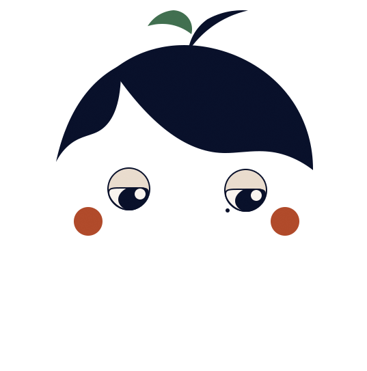

ABOUT
わたしについて

西口 明李
2001年生まれ。滋賀県在住。
京都美術工芸大学を中退後、2022年より飲食店で接客業に従事していました。
学生時代にPhotoshop等のソフトウェアに触れデザインを学んだ経験から、
Webデザインに興味を持ったことがきっかけで、スクールに入塾しました。
学んでいく中で、デザインの領域からIT業界にも興味がわき、
カリキュラムではフロントエンド領域や
サイト制作の基礎を中心に学習しましたが、
現在は、バックエンドの領域についても知識を深めたくなり、Java等の学習を独学で進めています。
STORY
IT・Web業界を目指すまで